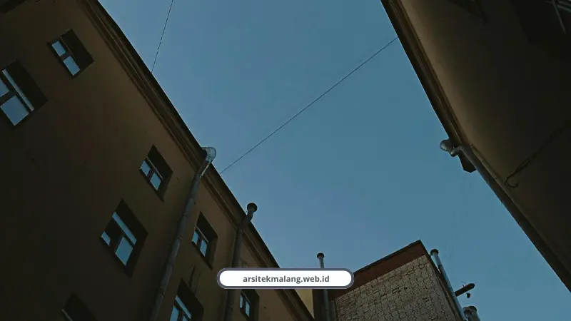

Ringkasan Inti
- Void rumah adalah rongga terbuka vertikal tanpa pelat lantai yang menyalurkan cahaya alami dan udara segar hingga lantai dasar melalui prinsip pasif dan efek cerobong hawa.
- Berdasarkan simulasi dan studi kasus, bukaan void terbukti mendongkrak pencahayaan dari 20–55 lux menjadi 825–1.281 lux, melampaui standar SNI (120–350 lux) tanpa lampu di siang hari.
- Penerapan void memangkas tagihan listrik AC hingga 60–80% (hemat Rp600.000–Rp1.000.000/bulan) dengan titik balik modal hanya dalam 2–3 tahun serta hemat modal awal AC Rp15–20 juta.
- Masalah perambatan suara dapat diatasi dengan karpet atau panel kayu berlubang, sementara penumpukan panas dicegah dengan jendela tinggi berjalusi dan railing pengaman 100–110 cm.
- Void tetap sangat ideal diterapkan pada lahan sempit (dimensi minimal 2 meter dan luas 6–12 m²) untuk menciptakan ilusi ruang yang jauh lebih lapang dan elegan.
Daftar Isi Artikel
Desain void rumah adalah rongga vertikal terbuka yang menyalurkan cahaya matahari dan udara segar sampai ke lantai dasar rumah 2 lantai. Manfaatnya rumah jadi terang alami dan hemat listrik AC sampai puluhan persen.
Saya sering nemu rumah 2 lantai yang bagian tengahnya gelap dan lembap sepanjang hari. Lampu nyala dari pagi, AC nyala dari siang, dan tagihan listrik bengkak tiap bulan.
Padahal masalahnya sering sederhana, cuma soal nggak ada jalur cahaya dan udara yang tembus ke tengah rumah.
Apa Itu Void Rumah dan Kenapa Penting untuk Rumah 2 Lantai?
Void rumah adalah ruang kosong vertikal yang menghubungkan lantai dasar dengan lantai atas tanpa terhalang pelat lantai atau plafon di bagian tengahnya. Fungsinya dua, mengalirkan cahaya dan mengatur sirkulasi udara.
Prinsip kerjanya pasif, artinya nggak butuh listrik sama sekali. Cahaya matahari masuk lewat jendela atas atau skylight, langsung menembus sampai ke lantai dasar.
Untuk udara, void memanfaatkan efek cerobong hawa. Udara panas di lantai bawah naik ke atas dan keluar lewat bukaan puncak void, sementara udara segar tertarik masuk dari bukaan bawah.
Seberapa Terang Rumah dengan Void Dibanding Standar SNI?
Rumah dengan void yang dirancang benar bisa melebihi standar SNI pencahayaan alami tanpa bantuan lampu sama sekali di siang hari. Ini bukan klaim kosong, ada data simulasi yang membuktikannya.
- SNI 03-6575-2001 mensyaratkan ruang tamu dan kamar tidur butuh 120 sampai 250 lux
- Area dapur dan kamar mandi butuh sekitar 250 lux
- SNI 6197:2011 mensyaratkan ruang kerja atau komputer minimal 350 lux
- Studi kasus Rumah Bias di Sleman mencatat iluminasi ruang tengah 471 sampai 621 lux lewat void
- Studi kasus Kantor Orkha di Lowokwaru, Malang, melonjak dari 20-55 lux jadi 825-1.281 lux setelah redesain bukaan vertikal
Angka terakhir itu yang paling saya suka. Dari ruangan segelap gudang jadi terang benderang, cuma modal desain bukaan yang benar, tanpa nambah daya listrik.

Berapa Hemat Biaya Listrik dari Desain Void Rumah?
Hemat listrik AC dari desain void bisa mencapai 60 sampai 80 persen, setara Rp600.000 sampai Rp1.000.000 per bulan tergantung ukuran rumah dan intensitas pemakaian.
Muhammad Musyaffa, Arsitek Principal kami, menjelaskan kenapa investasi ini balik modal cepat.
"Pemanfaatan efek cerobong hawa melalui void tangga vertikal setinggi 3,6 sampai 4 meter yang dipadukan dengan skylight berjalusi membuat udara panas terbuang otomatis secara alami. Alokasi biaya jasa arsitek untuk perencanaan desain pasif ini terbukti menjadi investasi cerdas yang memotong tagihan listrik AC hingga 60 sampai 80 persen seumur hidup bangunan, dengan balik modal hanya dalam 2 sampai 3 tahun pertama."
Selain hemat listrik, void juga memangkas modal awal pembelian unit AC sekitar Rp15 sampai 20 juta karena kebutuhan pendingin ruangan jadi jauh berkurang.
Frederik Yulistiyo dan Dhani Mutiari, peneliti arsitektur dari SIAR VII, menambahkan soal fungsi ganda void.
"Penerapan void di ruang tengah yang terintegrasi dengan bukaan dan taman luar menciptakan jalur masuk cahaya yang stabil sepanjang hari. Keberadaan void tidak hanya fungsional secara penerangan tetapi juga menjadi poros utama ventilasi silang iklim tropis."
Catatan Arsitek Malang
Hindari pemasangan skylight kaca mati (fixed glass) tanpa kisi-kisi atau bukaan sirkulasi di puncak void. Tanpa ventilasi udara atas, void berisiko menciptakan efek rumah kaca (greenhouse effect) yang justru memerangkap udara panas di lantai dua saat siang terik.
Apa Saja Masalah Void Rumah dan Cara Mengatasinya?
Masalah paling umum ada dua, yaitu suara yang merambat lewat rongga void dan panas yang terjebak di puncak void kalau desainnya salah.
- Suara dari lantai bawah gampang bergema ke kamar atas karena tidak ada sekat pelat, solusinya pakai karpet, tirai tebal, atau panel kayu berlubang di dinding void
- Panas terperangkap kalau skylight pakai kaca mati, solusinya ganti dengan jendela tinggi yang bisa dibuka atau kisi-kisi berjalusi
- Ukuran void kurang proporsional, idealnya 6 sampai 12 meter persegi dengan sisi terpendek minimal 2 meter
- Risiko keamanan anak, railing pengaman void minimal 100 sampai 110 cm dengan celah jeruji maksimal 10 cm
Imaniar Sofia Asharhani, peneliti arsitektur ITB, mengingatkan soal risiko silau berlebih kalau desain bukaan atap tidak dihitung dengan cermat.
"Mendesain void dengan bukaan atap harus memperhitungkan ketinggian dan dimensi bukaan agar tidak menciptakan offending zone atau kesilauan berlebih yang justru mengganggu kenyamanan visual penghuni."
Apakah Void Rumah Cocok untuk Semua Ukuran Lahan?
Void tetap bisa diterapkan di lahan sempit selama proporsinya dihitung dengan benar, minimal sisi terpendek 2 meter dan luas total 6 sampai 12 meter persegi. Bahkan di lahan sempit, void justru jadi solusi supaya rumah tidak terasa sumpek.
Selain fungsi teknis, void juga menciptakan ilusi plafon tinggi yang bikin rumah di lahan terbatas terasa jauh lebih lapang dan mewah dibanding realitas ukurannya.
Kalau Anda ingin tahu bagaimana desain void ini diintegrasikan dengan tata ruang keseluruhan rumah 2 lantai, termasuk soal kamar dan carport, pembahasan lengkapnya ada di artikel kami soal jasa arsitek rumah 2 lantai di Malang.
Konsultasikan Desain Void Rumah 2 Lantai Anda
Diskusikan kebutuhan pencahayaan alami, sirkulasi udara pasif vertikal, dan DED arsitektur bersama tim ahli Arsitek Malang.

Naura Regyna Putri
Penulis & Tim Riset Arsitektur Maroon Arsitek Malang, spesialis desain pasif tropis, optimasi pencahayaan alami, dan efisiensi energi bangunan 2 lantai.